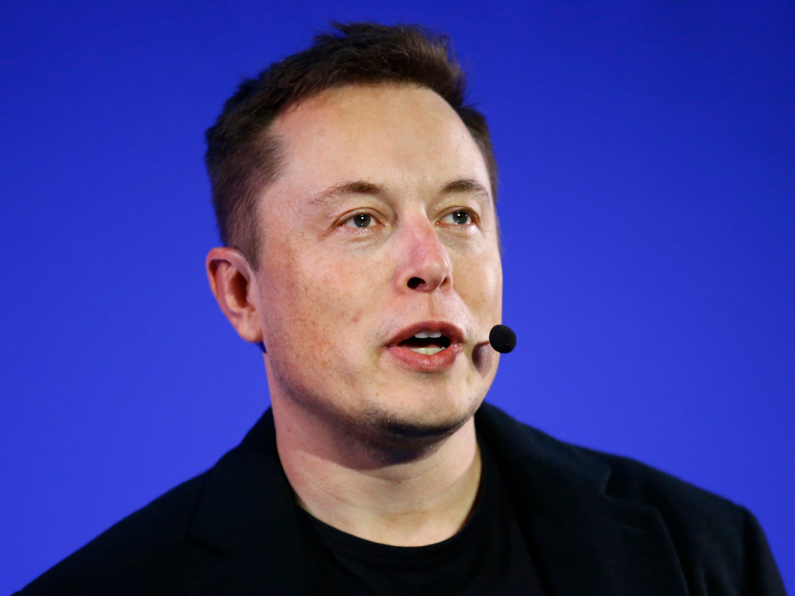

Campista:
Andres Arias Naranjo
Elon Musk
Musk es principalmente conocido por Tesla, la empresa de coches eléctricos y cada vez más autónomos, y desde hace unos años, muchas personas también le asocian con Twitter después de que la comprara por unos astronómicos 44.000 millones de dólares.
Personaje 2:
Hace más de cuatro décadas, Steve Jobs conoció a Steve Wozniak, quien diseñó el Apple I, una de las primeras computadoras para uso personal. La comercialización del producto, sin embargo, fue idea de Steve Jobs, quien estaba convencido de que la perseverancia era “lo que separa a los emprendedores exitosos de los que no triunfan